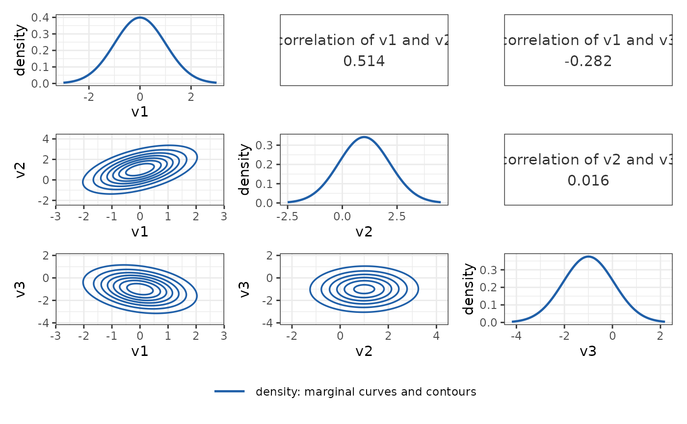
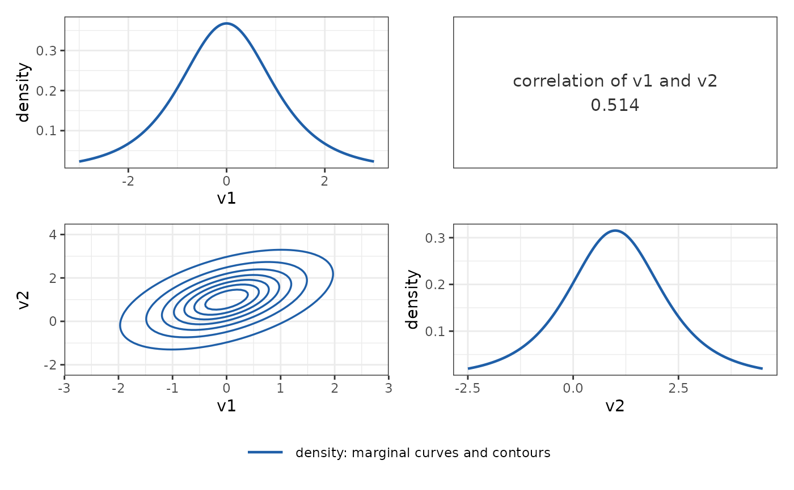

Draws a multivariate distribution as a matrix of panels: the marginal density
of each coordinate on the diagonal, contours of each bivariate marginal below
it, and the implied correlation printed above it. The density panels are
built from marginals, so the plot exists where mv_marginal() returns a
marginal of several coordinates, which holds for the multivariate gaussian
and Student \(t\). For the Dirichlet and the multinomial, whose marginals
are returned one coordinate at a time, the plot signals the error of
mv_marginal().
Arguments
- x
An object inheriting from
multivariate_distrib().- theta
A named list or vector of parameters in which each component is a single number. When missing, parameters are drawn by
generate_random_theta()and reported in a message. A component of length greater than one is an error.- which
An integer vector of the coordinates to show, at most three. Defaults to
NULL, which means all of them and is itself an error above three coordinates.- n_grid
Points per axis for the contours. The marginal density curves on the diagonal use
4 * n_gridpoints. Defaults to80. The bivariate panels evaluate the density on ann_grid * n_gridgrid, so the cost is quadratic in it.- col_fit
Color of the density curves, the contours and the printed correlations. Defaults to
"#B22222".- ...
It is accepted so that the signature matches the generic's, and not used.
At most three coordinates
A panel matrix of \(k\) coordinates has \(k^2\) panels, and past three
the panels are too small to read. A larger distribution signals an error that
names the number of coordinates and suggests which.
The contour levels
The contours are levels of the density and not of the probability content of
the enclosed region, which would require the mass of each level set of the
density. The levels are those that graphics::contour() selects (about six,
from pretty()) over the range of the density on the grid.
One setting only
A univariate plot() method reads a theta component of length \(k\) as
\(k\) settings drawn over one another. Here the picture is already a matrix
of panels and has no axis on which to overlay them, so a component longer
than one signals an error that names it.
The plotting range
Each coordinate is drawn over three standard deviations either side of the
location, and the spread is taken from the matrix that the parametrization
carries (see mv_sigma()). A multivariate Student \(t\) with \(\nu \le
2\) has an infinite variance, so variance() cannot be the source. For an
elliptical family the two matrices agree up to a factor, which is enough for
a plotting range.
See also
mv_marginal(), which supplies the density panels,
plot.distrib_fit(), which draws the same matrix with the data on it,
and plot.continuous_distrib() for the one-dimensional case, which does
overlay several settings.
Examples
d <- mvgaussian1_distrib(3)
theta <- as.list(stats::setNames(
c(0, 1, -1, 0, 0, 0, 0.6, -0.3, 0.2), d@params
))
op <- graphics::par(no.readonly = TRUE)
plot(d, theta)

graphics::par(op)
# Two coordinates of a heavy-tailed family are drawn, and its contours are
# wider than a gaussian's at the same matrix.
t2 <- mvstudent_t1_distrib(3)
th2 <- as.list(stats::setNames(c(unlist(theta), 3), t2@params))
op <- graphics::par(no.readonly = TRUE)
plot(t2, th2, which = c(1, 2))

graphics::par(op)
# Four coordinates would give sixteen panels, so the call signals an error.
d4 <- mvgaussian1_distrib(4)
th4 <- as.list(stats::setNames(rep(0, d4@n_params), d4@params))
try(plot(d4, th4))
#> Error : A panel matrix of 4 coordinates has 16 panels and is not readable.
#> Choose at most three with 'which', for instance which = c(1, 2, 3).